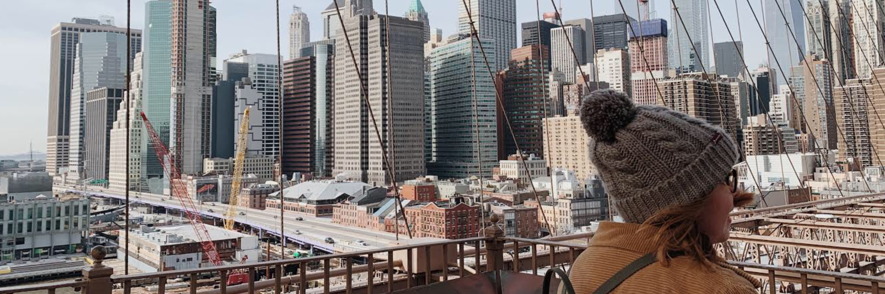
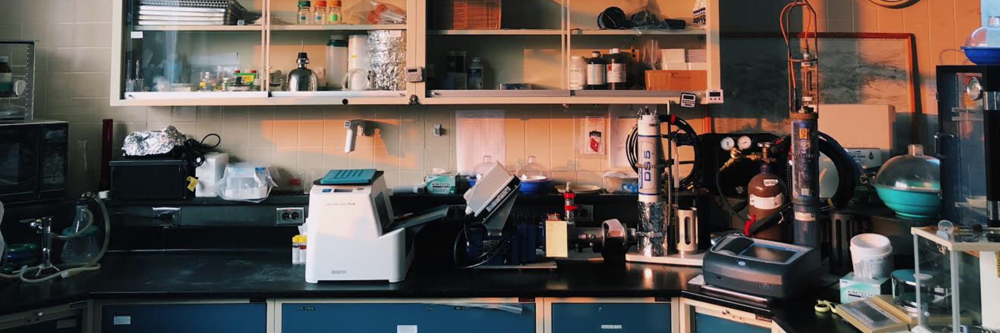

About Me

Education:
In June 2017, I graduated from Homer High School, located in Homer NY, with an Advanced Regents Diploma. The following August, I enrolled in Cornell University’s College of Engineering and began pursuing my Bachelor of Science degree in Civil Engineering. I’ve taken courses such as Fluid Mechanics, Structural Modeling and Behavior, Environmental Systems Analysis, and Communication for Transportation Engineering to create a wide understanding of Civil and Environmental Engineering concepts.
In Spring 2021, I plan to continue my education through Cornell’s Master of Engineering program. My goal is to graduate with an M.Eng in Structural Engineering in December 2021.
Interests:
Out of all the classes I’ve taken so far at Cornell, the courses I’ve enjoyed the most are the ones that emphasize design, sustainability, and real-world applications. I love seeing connections between concepts I learn in class and how they would translate to the workplace. Outside of class and work, I enjoy painting, taking my dog for walks, and playing the piano.
Experience

Project Assistant at Town of Ithaca
As a project assistant, I performed weekly stormwater inspections for small-scale construction sites all over the Town of Ithaca. I also inspected the Town’s stormwater outfalls for potential illicit connections and monitored their condition using Survey123 for ArcGIS. During my internship, several major projects (road reconstruction, water main replacement, and park construction) were in progress; I was able to visit these projects at different stages of completion and see what a typical day on a construction site looks like. I worked with the Town’s Land Surveyor and learned how to operate an SP80 GNSS Receiver. I used this equipment to locate catch basins and add them to an ArcGIS map. I also used Civil3D to create 3D Tin surfaces from survey data, and I used both Civil3D and Microstation to create and modify as-built drawings.
Intern at Ithaca Area Wastewater Treatment Facility
At the IAWWTF, I worked in the laboratory testing wastewater at different stages of treatment. I tested the wastewater for phosphorus, residual chlorine, Biological Oxygen Demand (BOD), Total Suspended Solids (TSS), and fecal coliform to ensure the plant’s output was within New York State’s standards. I also sampled Cayuga lake to monitor levels of phosphorus and fecal coliform.
Intern for Timothy C. Buhl, P.E.
Throughout high school and college, I’ve worked under my dad, a Civil P.E. In the office, I transitioned twenty-five years of projects from a paper to an electronic filing system, increasing office efficiency. I also traveled with him to sites to perform Soil Percolation Tests for Septic Systems. I prepared Environmental Site Assessment draft reports for solar farms through analysis of historical aerial photos and topographic maps, research using environmental databases, and gathering information on current conditions through site visits. Recently, I’ve been constructing a database of contour map shapefiles for counties in central New York that he can use for reference when laying out a design for septic systems.
Projects

AUTOCAD:
ARCGIS:
PRESENTATIONS:
Contact
Email: kab394@cornell.edu
Address:
4928 Foster Rd
Cortland, NY 13045